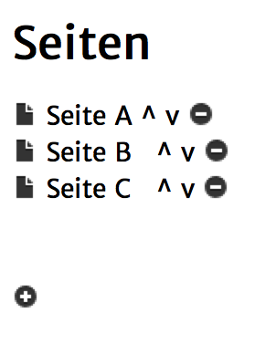

Mit dieser Aktion ist es möglich, die Seite aufzurufen, die in der Seitenliste als nächstes nach der aktuellen Seite kommt.

Wenn du diese Aktion also z.B. in Seite A benutzt, würde der Spieler zu Seite B geleitet.
Wenn du sie in Seite B benutzt, würde der Spieler zu Seite C gelangen und
wenn du sie in Seite C benutzt, würde der Spieler die Quest beenden, da keine weitere Seite vorhanden ist.
Für diese Aktion gibt es keine Einstellungsmöglichkeiten.